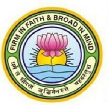

GGDSD COLLEGE
Sector-32C,CHANDIGARH

BACHELOR OF COMPUTER APPLICATIONS(B.C.A) Syllabus
for 1st and 2nd Semester
FIRST SEMESTER:-
~English(Compulsory)–A
BCA-16-101
Section A
1) Short Stories ( 1& 2)
One essay type question on summary/Character/Incident (one out of two with internal choice) ...10 marks
2) Prose ( 1 to 3)
Long essay type question on Summary/Theme(one out of two with internal choice) ...10marks
3) Poetry (1 to 6) ...15 marks
Summary (one out of two with internal choice) ...5 marks
Short Questions (two out of three) ...5 marks
Reference to the Context (one out of two with internal choice) ...5marks
Section B
1) Word formation from Prose and Stories and their use in sentences (5 out of 8) ...10 marks
2) Use of textual words and idioms in sentences (5 out of 8) ...10 marks
3) Translation from Hindi/Punjabi to English ...5 marks
OR
For Foreign Students (Paraphrase of Poetry Passage)
4) Official, Business and Letters to the Editors ...5 marks
.
.
.
.
.
.
.
.
.
~Fundamentals of Mathematical Statistics
BCA-16-102
UNIT - 1
- Basic Statistics:
Types of Statistics, Different Statistical Techniques, Steps in Statistical Investigation, Uses and Limitations of statistics,
Collection of Data: Sources of collecting primary and Secondary Data, Limitations of Secondary Data,Criteria of evaluating secondary data, Organization of data,
Graphs of Grouped Frequency Distribution, Tabulation of Data, Parts of Table
- Measures of Central Tendency:
Kinds of measures of central tendency (statistical averages or averages):
- Arithmetic Mean:
Simple Arithmetic Mean, Methods of calculating Simple Arithmetic Mean, Arithmetic Mean in case of Individual Series, Discrete series and continuous
series, Weighted Arithmetic Mean, Combined Arithmetic Mean.
- Geometric Mean:
Simple Geometric Mean, Methods of calculating Simple Geometric Mean,
Geometric Mean in case of Individual Series, Discrete series and continuous series, Weighted Geometric Mean, Combined Geometric Mean.
- Harmonic Mean:
Simple Harmonic Mean, Methods of calculating Simple Harmonic Mean, Harmonic Mean in case of Individual, Discrete series and continuous series,
Weighted Harmonic Mean, Combined Harmonic Mean.
UNIT - 2
- Median:
Methods of Calculating Median in case of Individual, Discrete series and continuous series Partition Value: Quartile, Quintiles, Hexiles, Septiles, Octiles, Deciles,
Percentiles
- Mode:
Methods of Calculating Mode in case of Individual Series, Discrete series and continuous series
- Range:
Computation of Range, Inter Quartile Range, Computation of Inter Quartile Range, Percentile Range and Computation of Percentile Range.
- Mean Deviation, Computation of Mean Deviation, Standard Deviation, Calculation of Standard Deviation, Variance,
Calculation of Standard Deviation for individual Series, Discrete Series and Continuous Series, Coefficient of Standard Deviation and coefficient of variation,
Combined Standard Deviation, Correcting incorrect Standard Deviation.
UNIT - 3
1. Correlation Analysis : Correlation Analysis: Definition, Types of Correlation: Positive, Negative, Simple, Multiple, Partial, Total, Linear and Non-Linear.
Need of Correlation Analysis, Correlation and Causation, Techniques for Measuring Correlation: Scatter Diagram Method, Graphic Method, Karl Pearson’s Coefficient of
Correlation: Correcting incorrect coefficient of correlation, calculating Karl Pearson’s coefficient of correlation in case of grouped series, Probable Error,
Coefficient of Determination, Spearman’s coefficient of Correlation (Rank correlation): Calculation of Correct Coefficient of rank correlation, Difference between
Rank Coefficient and Karl Pearson’s coefficient of coefficient, Coefficient of concurrent deviation.
UNIT - 4
1. Regression Analysis (Linear Regression): Definition, Difference between Correlation and Regression,
Types of Regression Analysis: Simple, Multiple, Partial, Total, Linear and Non-Linear, Objectives of Regression Analysis, Methods of obtaining regression analysis:
Regression Lines, Regression Equations. Methods of obtaining regression equations: Normal Equations and Regression Coefficient, Properties of Regression Coefficient,
Standard Error of Estimate, Regression Coefficient in case of Grouped Data, Uses of Regression Analysis and Limitations of Regression Analysis.
.
.
.
.
.
.
.
.
.
~Computer Fundamentals and Computing Software
BCA-16-103
UNIT - 1
- Computer Appreciation: Introduction to computers, characteristics of computer; History of computers;
Classification of computers on size: (Micro, Mini, Mainframe and super computers), Working Principles, Generations;
Applications of computers; commonly used terms–Hardware, Software, Firmware. Basic Computer Organization: Block diagram of computer system,
Input unit, Processing Unit and Output Unit; Description of Computer input devices: Keyboard, Mouse, Trackball, Pen, Touch screens, Scanner, Digital Camera;
Output devices: Monitors, Printers, Plotters. Computer Memory: Representation of information: BIT,
BYTE, Memory, Memory size; Units of measurement of storage;
- Main memory: Storage evaluation criteria, main memory organization, RAM, ROM, PROM, EPROM; Secondary storage devices: Sequential Access Memory,
Direct Access Memory Magnetic Tapes, Magnetic disks, Optical disks: CD, DVD; Memory storage devices: Flash Drive, Memory card;
Types of software: System and Application software; Programming Languages: Generation of Languages; Translators - Interpreters, Compilers,
Assemblers and their comparison.
UNIT - 2
- Understanding Operating System using DOS : Introduction to operating systems and its functions, DOS and versions of DOS,
Booting sequence; Warm and Cold Boot; Concepts of files and directories, Redirecting command input and output using pipes, Wildcard characters,
Types of DOS commands: Internal and External; Internal Commands: DIR, MD, CD, CLS, COPY, DATE, DEL, PATH, PROMPT, REN, RD, TIME, TYPE, VER, VOL;
External Commands: XCOPY, ATTRIB, BACKUP, RESTORE, FIND, SYS, FORMAT, CHKDSK, DISKCOPY, LABEL, MOVE, TREE, DELTREE, DEFRAG, SCANDISK, UNDELETE.
Batch Files: Introduction to simple batch files; Introduction to CONFIG.SYS and AUTOEXEC.BAT files.
- Understanding Graphical User Interface using Windows: Fundamentals of Windows, Types of Windows, Anatomy of windows, Icons, Recycle bin, Operations on Folders,
Registry of Windows: Basics, Editing; Control panel.
UNIT - 3
- Word Processing Package: Opening, saving and closing an existing document; renaming and deleting files;
Using styles and templates: Introduction to templates and styles; applying, modifying and creating new (custom) styles;
using a template to create a document, creating a template, editing a template, organizing templates, examples of style use,
Changing document views, Moving quickly through a document, Working with text: select, cut, copy, paste, find and replace, inserting special characters,
setting tab stops and indents, Checking spelling and Grammar, Autocorrect, Using built-in language tools, word completion, Autotext,
Formatting text: Using Styles, formatting paragraphs, formatting characters, autoformatting, creating lists; Formatting pages: Using layout methods,
creating headers and footers, Numbering pages, Changing page margins, Adding comments to a document, Creating a table of contents,
Creating indexes and bibliographies, Printing a document, Using mail merge, Tracking changes to a document, Using fields, Linking to another part of a document,
Using master documents, Creating fill-in forms.
UNIT - 4
- Spreadsheet Package: Introduction to Spreadsheets, sheets and cells; Opening and saving spreadsheet files; Working with sheets: inserting new sheet,
deleting and renaming sheets, Viewing a spreadsheet: freezing rows and columns, splitting screen, Entering data: cell referencing, formatting cells,
entering numbers, entering numbers as text, entering formulae, entering date and time, deactivating automatic changes,
Speeding up data entry: using fill tool, fill series, defining fill series, Validating cell contents, Formatting data: formatting text, numbers, cells,
Autoformatting cells and sheets, defining new autoformat, Using conditional formatting, Hiding and showing data, Sorting records,
Printing a spreadsheet document: using print ranges, page formats, inserting page breaks, headers and footers;
Working with Graphs and Charts : Creating Embedded Chart, formatting chart: Changing chart types, adding Titles, Legends and Gridlines, Printing Charts;
Adding database functions: defining database ranges, sorting, filtering and grouping database ranges; Evaluating data: using DataPilot;
Functions and Macros: using and editing existing macro, Creating Macros, Recording Macros, Running Macros.
Presentation Packages: Basics of creating a presentation, Parts of main window, workspace views,
creating a presentation, Incorporation of Animation.
.
.
.
.
.
.
.
.
.
~Problem Solving Through C
BCA-16-104
UNIT - 1
- Programming Process: Steps in developing of a program, Data Flow Diagram, Decision Table, Algorithm development,
Flowchart, Pseudo Code, Testing and Debugging.
- Fundamentals of C Languages: History of C, Character Set, Identifiers and Keywords, Constants, Types of C Constants,
Rules for Constructing Integer, Real and character Constants, Variables, Data Types, rules for constructing variables.
- Operators and Expressions: C Instructions,
Arithmetic operators, Relational operators, Logical operators, Assignment Operators, Type Conversion in Assignments, Hierarchy of Operations,
Standard and Formatted Statements, Structure of a C program , Compilation and Execution.
UNIT - 2
- Decision Control Structure: Decision making with IF-statement, IF-Else and Nested IFElse, The else if Clause.
- Loop Control Structure: While and do-while, for loop and Nested for loop, Case Control Structure: Decision using switch, Thegoto statement.
- Functions: Library functions and user defined functions, Global and Local variables, Function Declaration, Calling and definition of function,
Methods of parameter passing to functions, recursion, Storage Classes in C.
UNIT - 3
- Arrays: Introduction, Array declaration, Accessing values in an array, Initializing values in an array, Single and Two Dimensional Arrays,
Initializing a 2-Dimensional Array, Memory Map of a 2-Dimensional Array, Passing array elements to a function: Call by value and call by reference,
Arrays of characters, Insertion and deletion operations, Searching the elements in an array, Using matrices in arrays, Passing an Entire Array to a Function.
- Pointers: Pointer declaration, Address operator “&”, Indirection operator “*”, Pointer and arrays, Pointers and 2-Dimensional Arrays, Pointer to an Array, Passing 2-D
array to a Function, Array of Pointers.
- Dynamic Memory Allocation: malloc(), calloc(), realloc(), free() functions.
UNIT - 4
- String Manipulation in C: Declaring and Initializing string variables, Reading and writing strings,
String Handling functions(strlen(), strcpy(), strcmp(), strcat()).
- Structures and Unions: Declaration of structures, Structure Initialization,
Accessing structure members, Arrays of structure, Nested structures, Structure with pointers,
Union.
- Files in C: Introduction, Opening and Closing files, Basic I/O operation on files.
.
..
.
.
.
.
SECOND SEMESTER:-
~English(Compulsory)–B
BCA-16-201
Section A
1) Short Stories ( 3-5)
One essay type question on summary/Character/Incident (one out of two with internal choice)...10 marks
2) Prose ( 4-5) Long essay type question on Summary/Theme (one out of two with internal choice) ...10 marks
3) Poetry (7-11) ...15marks
Summary (one out of two with internal choice) ...5 marks
Short Questions (two out of three) ...5 marks
Reference to the Context(one out of two with internal choice) ...5 marks
Section B
1) Paragraph Writing(Descriptive and Narrative) ...10 marks
2). Use of textual words and idioms in sentences (5 out of 8) ...10 marks
3). Translation from Hindi/Punjabi to English ...5 marks
OR
For Foreign Students (Paraphrase of Poetry Passage)
4) Transformation of all types (5 out of 5) ...5 marks
.
.
.
.
.
..
.
.
.
~Computer Organization
BCA-16-202
Unit 1
Computer Organisation: Evolution of Computers, Von Neumann Architecture, Combinatorial Blocks : Gates, Half Adder, Full Adder, Multiplexers, Decoders, Encoders;
Sequential Building blocks : Flip Flops, Registers, Counters, Information representation: codes, fixed and floating point representation Arithmetic: Addition
and subtraction for sign magnitude and 2's complement numbers, integer multiplication using Booth's algorithms.
Unit 2
Architecture of a Simple Processor: Architecture of 8086/8088 microprocessor, instruction set, Addressing Modes.
Instruction: Microinstructions: Register Transfer, Arithmetic, Logical and Shift, Types of Instructions, Instruction Cycle. Interrupt: Types,
Interrupt Cycle I/O organization: Strobe based and Handshake based communication, DMA based data transfer
Unit 3
Memory Organisation: Memory Hierarchy, RAM (Static and Dynamic), ROM Associative memory, Cache memory organisation, Virtual memory organisation. Assembly Language : Features of Assembly Language,
Machine Language vs Assembly Language, Pseudo Instruction; use of Assembly for programs: Addition, Subtraction, Multiplication using Subroutines and
Basic Input/ Output.
Unit 4
System Maintenance: Introduction to various physical components of a computer, Physical Inspection and Diagnostics on PC, Functional description of various Internal
and External cards; Viruses: Types of Computer Viruses, Detection, prevention and protection from Viruses.
.
.
.
.
.
.
.
.
~Fundamentals of Web Programming
BCA-16-203
Unit 1
Basic Terminology: Web Server; Web Client/Browser, Understanding how a Browser communicates with a Web Server, Website, Webpage, Static Website, Dynamic Website,
Internet, Intranet, Extranet, WWW, URL HTML: Structure of an HTML program, Paragraph Breaks, Line Breaks; Emphasizing Material in a Web Page
(Heading Styles, Drawing Lines); Text Styles (Bold, Italics, Underline); Other Text Effects (Centering (Text, Images etc.) Lists: Unordered List, Ordered Lists,
Definition lists Adding Graphics to HTML Documents using the Border, Width, Height, Align, ALT Attributes Tables: Caption Tag, Width, Border, Cell padding,
Cell spacing, BGCOLOR, COLSPAN and ROWSPAN Attributes.
Unit 2
Linking Documents: Anchor tag, External Document References, Internal Document References and Image Maps Frames: Introduction to Frames: The